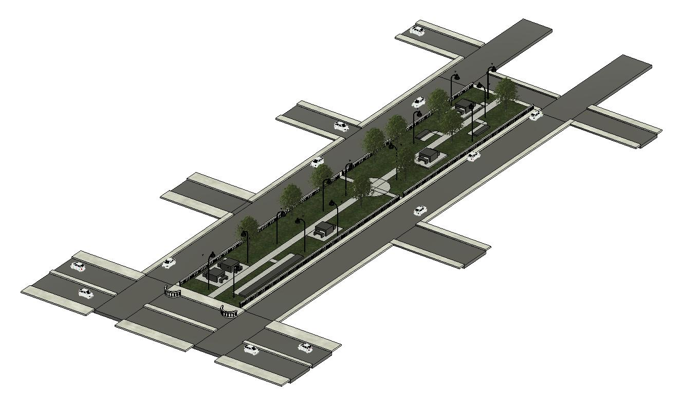
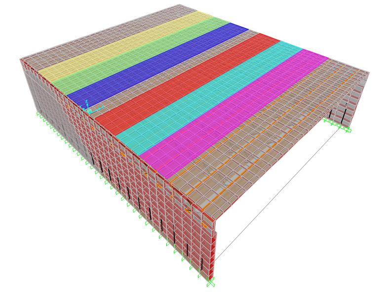
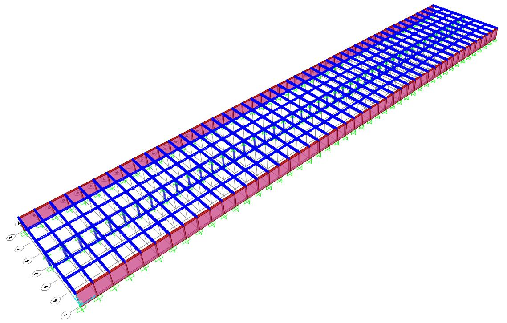
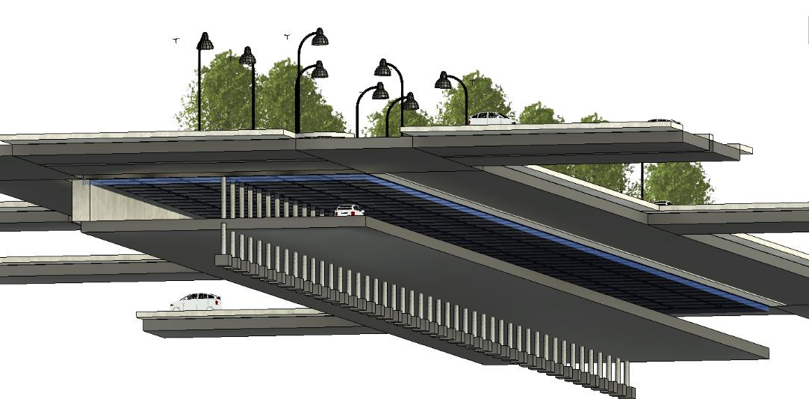
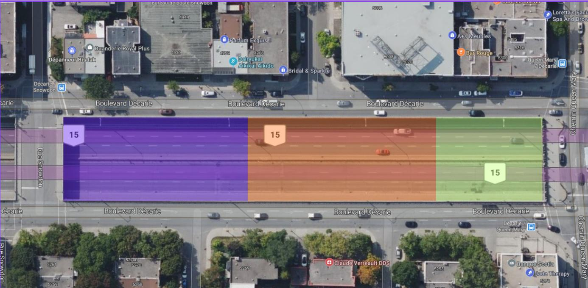

Et si une autoroute qui divise un quartier pouvait devenir le fondement d’un nouvel espace public? Pour notre projet de synthèse final en génie civil, notre équipe de cinq personnes a développé CapDécarie — une proposition visant à transformer une section de la tranchée de l’autoroute Décarie, entre Snowdon et Queen Mary, en un parc suspendu et piétonnier de 5 670 m², tout en remplaçant et en redessinant le viaduc vieillissant de Queen Mary.
En bref
Visuels sélectionnés




Le projet combine génie structural, transport, durabilité et design urbain pour transformer une infrastructure autoroutière existante en une occasion de reconnecter le quartier. Notre travail a mené le concept de l’étude de faisabilité jusqu’à la conception détaillée, incluant la conception du pont et des fondations, l’analyse des charges et sismique, la conception en acier et en béton armé, la gestion de la circulation, le drainage, l’analyse du carbone intrinsèque, l’estimation des coûts et le phasage de la construction.
Le comportement structural a été validé par modélisation par éléments finis dans CSiBridge et SAP2000, tandis que Revit a servi à visualiser comment le système d’ingénierie, l’aménagement paysager et l’espace public pouvaient s’unir au-dessus d’une autoroute active. Le résultat est une proposition d’infrastructure multidisciplinaire qui répond à deux enjeux à la fois : renouveler une infrastructure de transport vieillissante tout en transformant une barrière urbaine en espace utilisable pour la ville.
Ma contribution
Bien que toute l’équipe ait collaboré étroitement sur chaque aspect de CapDécarie, j’ai principalement dirigé la conception des semelles et des poutres de la structure du parc suspendu, la conception du drainage, ainsi que la simulation de circulation pour le phasage de la construction.
Voir les dessins structuraux sélectionnés →